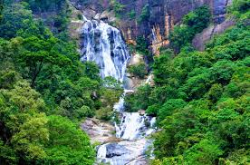
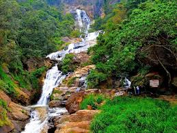
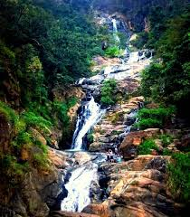

Ravana Falls
 
Ravana Falls is a popular sightseeing attraction in Uva province of Sri Lanka. It currently ranks as one of the widest falls in the country.
This waterfall measures approximately 25 m (82 ft) in height and cascades from an oval-shaped concave rock outcrop. During the local wet season,
the waterfall turns into what is said to resemble an areca flower with withering petals.
But this is not the case in the dry season, where the flow of water reduces dramatically.
The falls form part of the Ravana Ella Wildlife Sanctuary, and are located 6 km (3.7 mi) away from the local railway station at Ella.
The falls are named after the mythical king Ravana, who is connected to the famous Indian epic, the Ramayana.
According to legend, it is said that Ravana (who was the king of Lanka at the time) had kidnapped princess Sita,
and had hidden her in the caves behind this waterfall, now simply known as the Ravana Ella Cave.
The reason for the kidnapping is said to be exact revenge for slicing off the nose of his sister by Rama (husband of Sita) and his brother Laxmana.
At the time, the cave was surrounded by thick forests in the midst of the wilderness.
It is also believed that Rama's queen bathed in a pool that accumulated the water falling from this waterfall.
They believed that Ravana has played the Ravanahatha over here.
The Ramayana and Ravana are mythological in nature and are not considered factual and archaeologically verified history.
 Location (Ravana Falls)